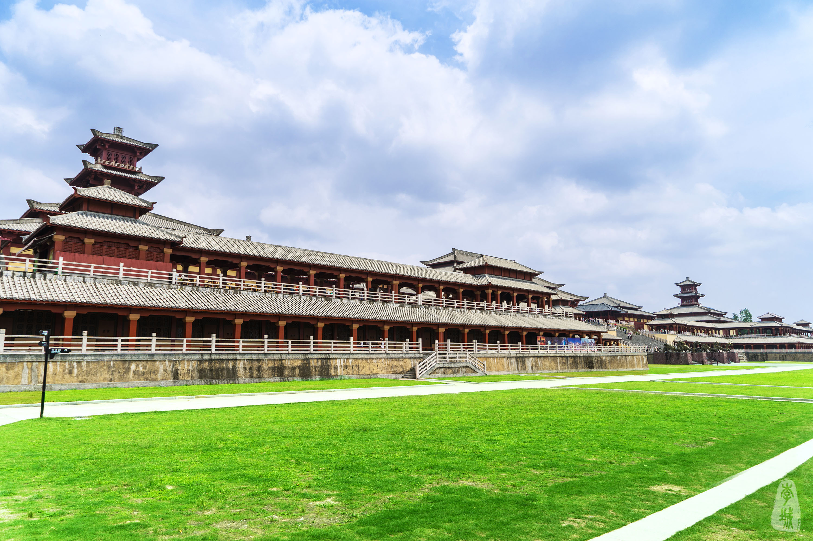
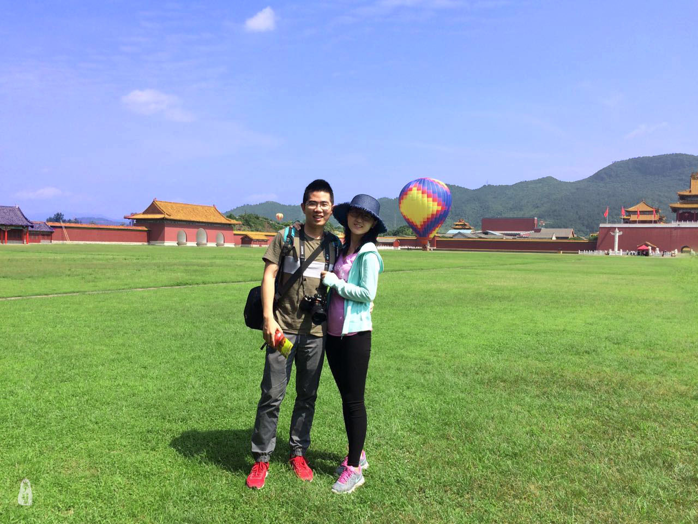
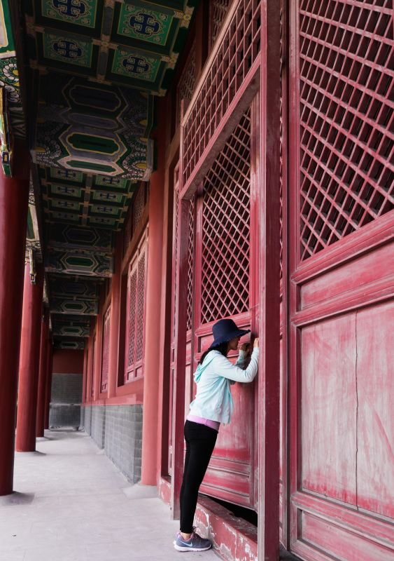
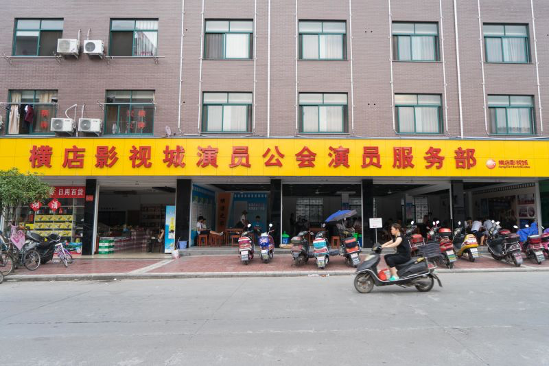
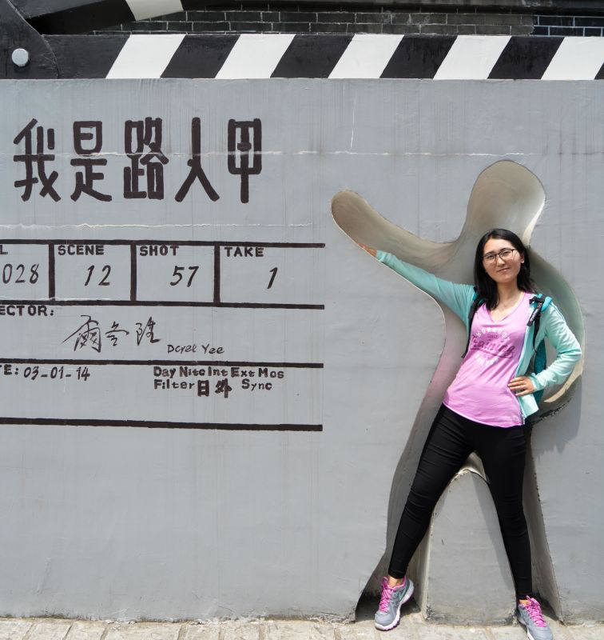

横店·群演的故事
一个人，一座城；这些人，这座城。 —— HML
横店，作为影视城，娱乐行业并没有给横店带来更多的帮助，无论是经济上还是资源上，所以到今天它依然是一座小县城，尽管有时候明星云集，当红剧中也会时不时出现影视城中熟悉的场景，都改变不了它给人落后、单调的印象。
在骄阳似火的5月，我们来到这座小城，是观光，也是来看看在这个小城生活的那一群人的生活，看看是不是真如尔冬升讲述的那样，是一群路人甲的故事。
为期两天的行程安排的是先参观秦王宫和明清宫苑，期盼能在参观过程中遇到剧组，实地感受下，有幸遇到大腕儿也不错。
秦王宫-东西长廊

明清宫苑-太和殿
秦王宫-四海归一殿前全景
明清宫苑-大明门外全景

你更爱哪个呢？
秦王宫，张艺谋《英雄》拍摄地。还记得是初中某个周六的课上班主任从她宿舍办了电视音响到教室带我们欣赏英雄的艺术创作和老谋子的手法独到。现在想来，也真是一段美好的回忆。有时候，我们念诗词歌赋，不为张口经纶，若是能在身临其境之时，抒发情感也是好的。明清宫苑，素有江南紫禁城美誉，不单单是因为其格局酷似，更是各大清宫名剧拍摄点，它壮阔辽远，站在太和殿前俯瞰大地更有大好江山唯我独尊大气势。
我爱秦王宫，胜过明清宫苑。论建筑，秦宫地域不广，辽土不阔，没有清宫那般远大。轮奢华，秦汉自来不会给人奢华浮夸之感。有人爱明清的用色大胆张扬，有人喜秦汉的凛然气魄。我，更爱后者，说不上特别的理由，可能这常常的复道也可以作为一个理由。置身其中，往前，若是没有这门，是看不到的尽头。往上，是压迫和森严。这才是皇宫应有的气势，我喜伟岸，不喜铺张。
秦王宫复道
明清宫苑-偏殿

初入秦王宫，凑巧遇到在前广场阙楼处拍摄“凤凰无双”的一出武戏，可惜剧组人员不让近身，无法一睹拍摄现场，真是出师不利。不过好在见缝插针还是抓到不少群演的镜头。
暴晒的天气，披着厚重的戏服，如果不是那场明星梦，如何维系这样的工作状态？群演哥哥中场休息买水喝。
假装一起入境
烈日下，派饭中
在明清宫苑遇到一位江湖艺人，靠着清宫戏中的江湖技艺耍戏卖笑求生，火中取钱口吞活蛇各种虐活都上——嘴上确实面子里子却都舍不得丢，非要强调自己也算是个半大不小的名角儿是来体验生活并不为挣钱，赏脸的观众并没有几个，可能最后给钱的并不在看在这艺上，更多的是卖的情，同情。后来想想，这位卖艺的大叔和他嘴上自我介绍的那位还并不是同一位，长得有几分相似而已，说不定也是一位龙套哥。
身份也是一场戏
原本满含希望而来，却没有在明清宫苑遇到任何剧组，只在离开的时候发现宫外亲王府幽闭之处正在拍摄某组抗战神剧，也是神不知鬼不觉，小成本到家——可见，今日抗战神剧市场已远远盖过宫廷戏，拍摄成本之小编剧脑洞之大更让其长驱直入大有侵占整个中国大陆电视剧市场势头。偷偷瞧了一眼，无奈还不让拍照。
我冲着路人甲而来，真的很想了解群演这个群体的生活状态和心理状态是怎样，于是在我们的掘地三尺之下，循着攻略找到了“演员老公会”这个组织。据说所有背负着明星梦来到横店打算大干一番的年轻人都会来这个地方报道，并且从此每日驻守在此大本营、接戏、对台本、跑龙套，期望终有一天能够遇到下一个尔冬升。
群演组织——老公会

接了戏的群演对台本
事实上，这些有着明星梦的青年们，大多非科班出身，也并不都有娇好的容颜，可能不具备任何一点走上星途的特质。但他们中大部分人执着地坚守这这个梦想，近乎偏执。我不能支持，但可以理解，不管是不是走捷径的心理还是真以为梦想可以无边无际，年轻都可一试。就像他们说的：梦想总是要有的，万一遇到尔冬升了呢。

假期结束了，我们回到自己的城市，他们又开始在他们的城市里坚持梦想。